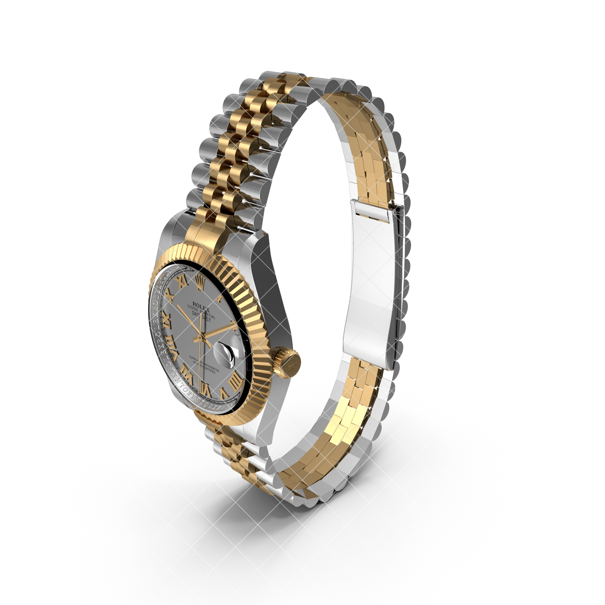
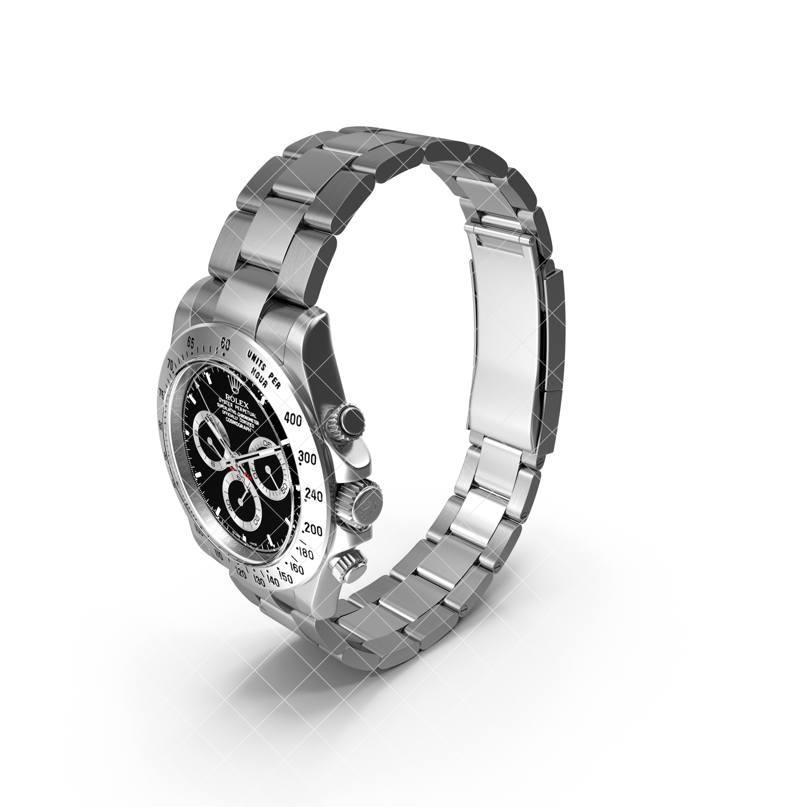

popular
Models

Rolex Datejust 36
The watch also features a tough and durable sapphire crystal glass and comes with a Swiss SW-200-1 automatic winding movement that has a power reserve.

Rolex Daytona Steel
The watch also features a tough and durable sapphire crystal glass and comes with a Sw-12-1 automatic windingProduct Description
Inspired by the WWI trench watch, this timepiece has a contemporary design with an urban style and a vintage soul. The 22 Design Studio Concrete Sector Watch reinterpets the old timepiece with a concrete dial. Handmade in Taiwan, the dial is cast in one pirce using the beton technique more detailed